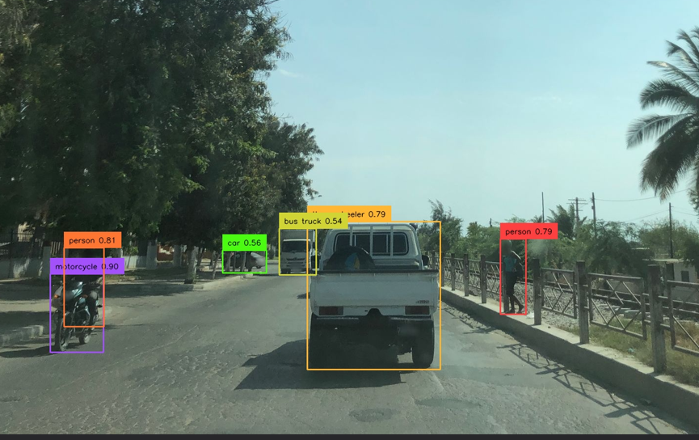
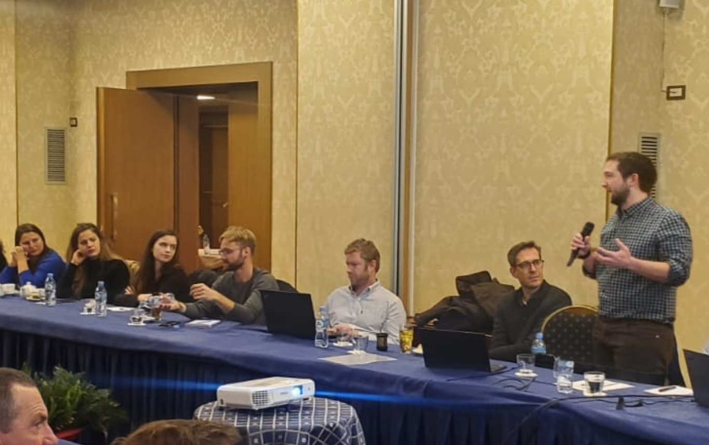
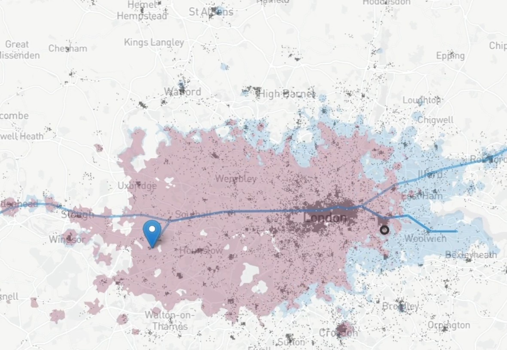

Services

Data analysis
Using existing data workflows, and developing custom methodologies, to understand transport patterns and build 'human-first' networks.
Our experience particularly includes deriving valuable intelligence from free and open datasets in developing countries, e.g. OpenStreetMap, GHSL, Mapillary etc.

Capacity building
Upskilling local partners, in both the UK and internationally, to think of transport 'data first': a shift in mindset and approach to planning and decision-making.

Economic appraisal
Building business cases for project investment, often developing custom methodologies to align with business-case guidance (e.g. TAG).
Dr Mark Dimond has also completed other forms of assessment, e.g. Paris Alignment Assessment (PAA) for international project financing.
Geographic Information Systems
Transport is geographic by its nature, and our GIS expertise helps visualize and analyze transport networks effectively.

Urban accessibility modelling
Quantifying transport investments in terms of their impact on travel time and equity can help unlock funding.
Our team have developed bespoke workflows using low-cost tools, including in countries without extensive transport data infrastructure.

Transport policy
Policy impact modelling for decision support, where necessary using new workflows and methodologies to suit your client's needs.